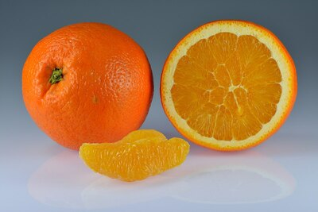
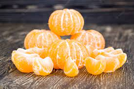

Productos de Naranja

Naranjas Enteras
Las naranjas más frescas y sabrosas que encontrarás. 100% naturales y sin conservantes.
Jugo de Naranja
Nuestro jugo de naranja es 100% puro y sin aditivos. El sabor natural de la naranja en cada sorbo.

Naranjas Peladas
Si no tienes tiempo de pelar naranjas, nosotros lo hacemos por ti. Naranjas peladas y listas para comer.